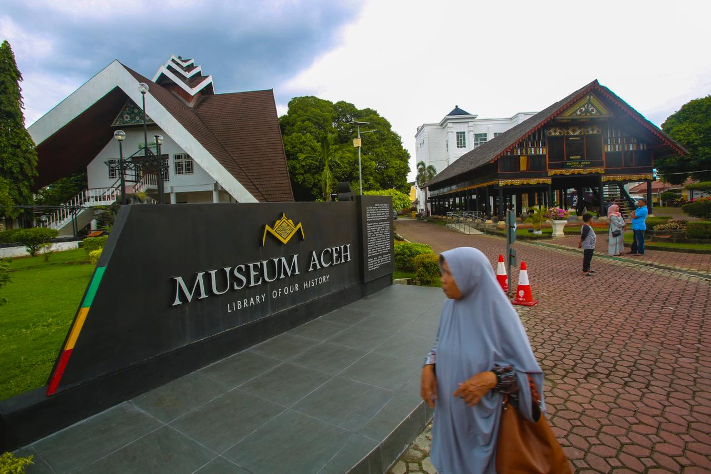

Peringatan Tsunami Aceh

Tentang Event
Rasakan pengalaman Ramadhan yang unik di Aceh melalui Aceh Ramadhan Festival 2025!
2019, Pemerintah Aceh melalui Dinas Kebudayaan dan Pariwisata Aceh telah menyelenggarakan festival ini sebagai landmark event untuk menarik wisatawan, terutama para Muslim traveler. Pada 2025, festival ini hadir dengan konsep baru untuk memperkenalkan Aceh sebagai World's Best Halal Cultural Destination.
Festival ini menawarkan pengalaman budaya Aceh yang khas selama bulan Ramadhan, dengan semangat beramal dan berkreasi dalam koridor syariat Islam. Pengunjung akan menikmati beragam atraksi, kajian, bazar, pameran, dan perlombaan yang akan membuat Ramadhan di Aceh semakin istimewa.
Jangan lewatkan kesempatan untuk merasakan kedamaian dan kekayaan spiritual Ramadhan di Aceh, serta temukan mengapa Aceh menjadi destinasi budaya halal terbaik dunia!
Agenda
Pembukaan Festival
Area halaman Masjid Raya Baiturrahman
Haflah Al-Qur'an bersama Syech Mohamed Nehmdou Hussein Ibrahim, Qari Internasional dari Mesir
Area halaman Masjid Raya Baiturrahman
Buka puasa bersama dan Khanduri Nuzulul Quran 1446 H
Area halaman Masjid Raya Baiturrahman
Penutupan Festival
Area halaman Masjid Raya Baiturrahman
Pendaftaran

Bagikan Event
Lokasi

Museum Tsunami
Jl. Sultan Iskandar Muda No.3, Sukaramai, Kec. Baiturrahman, Kota Banda Aceh, Aceh 23116